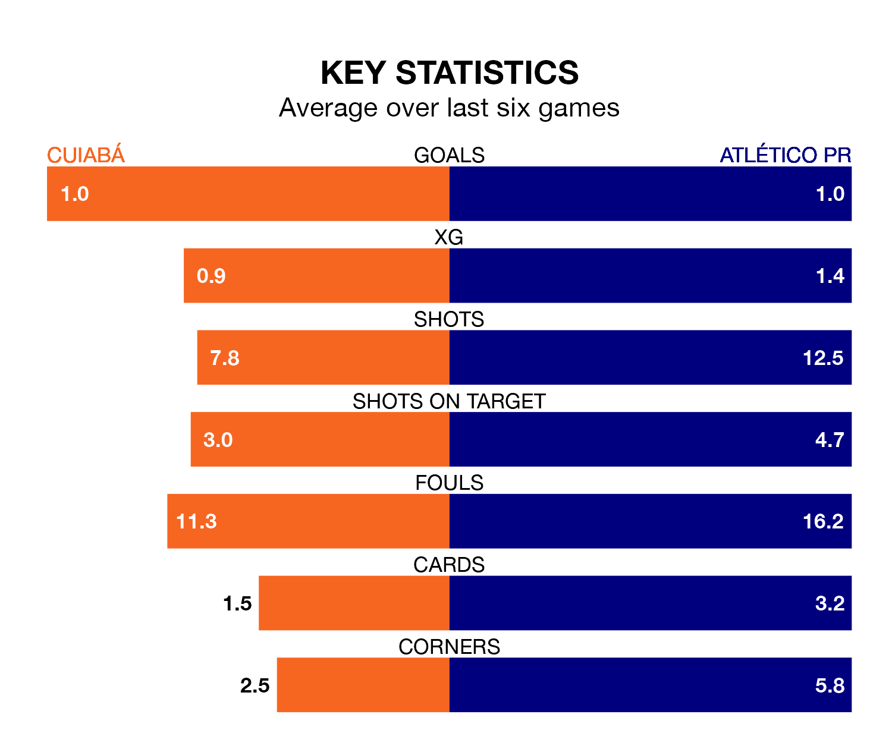

Atlético PR face Cuiabá on Thursday seeking to protect their long unbeaten run in Serie A.
Atlético PR are unbeaten in five, with one win and four draws, ahead of the 0.30am kick-off.
They face a Cuiabá team who have won two and drawn one over the same number of games.
With 37 goals in 37 games so far this season, Cuiabá are the league's third-lowest scorers with 1.0 goals per game. But they are conceding fewer than average too, letting in 39 goals at a rate of 1.1 per game.
Atlético PR, meanwhile, are above average scorers, with 1.4 goals per game, compared to a league average of 1.2. They have conceded 1.1 goals per game.
In Vitor Roque, the away team have one of the league's most on-form strikers so far this season. He has notched 12 goals in 25 appearances, to sit sixth in the scoring charts.
The hosts' top scorer, with 12 goals in 34 games, is Deyverson Brum Silva Acosta.
Atlético PR are seventh in the table after 37 games, of which they have won 14 and drawn 14, earning 56 points.
Cuiabá are five places behind Atlético PR in 12th, with 13 wins and nine draws putting them on 48 points.
Over the last two years, Cuiabá and Atlético PR have played each other on three occasions. Atlético PR won two of them and they drew once.
Their last meeting was on August 16, when Atlético PR won 2-0 at home.
Cuiabá's last match was on Sunday, a 2-1 loss against Flamengo, with Clayson Henrique da Silva Vieira getting the goal for Cuiabá.
Atlético PR beat Santos 3-0 last time out, also on Sunday, with Madson, Vitor Frezarin Bueno and Willian Gomes de Siqueira on the scoresheet.
